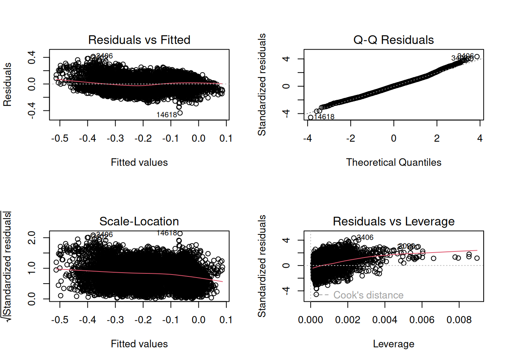
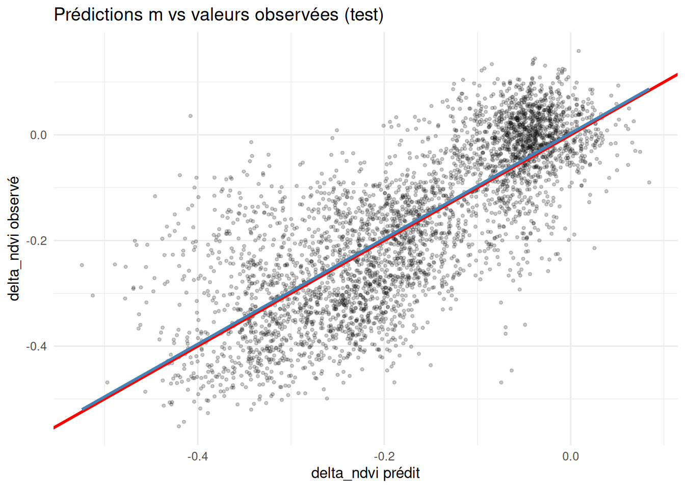

En filtrant les pixels avec un NDVI > 0.7 avant le cyclone et en enlevant ceux situés sur la côte à une altitude < 50 m, on obtient de bien meilleurs résultats dans nos modèle. Cependant ce seuil de NDVI pré-cyclonique est plutôt arbitraire. Pour tenter de trouver un seuil acceptable cohérent, on fait un kmeans (même si la distribution n’est pas bimodale).
# K-means avec k=2set.seed(42)km <-kmeans(dta$dec_ndvi, centers =2)dta$cluster <-factor(km$cluster)# Voir les centroïdes aggregate(dec_ndvi ~ cluster, data = dta, FUN = mean)
Le modèle linéaire utilisé pour faire les prédicitons est celui ci :
m <-lm(delta_ndvi ~ msw_max * ang6 + altitude + courbure , data = dta_train)summary(m)
Call:
lm(formula = delta_ndvi ~ msw_max * ang6 + altitude + courbure,
data = dta_train)
Residuals:
Min 1Q Median 3Q Max
-0.43465 -0.06563 0.00113 0.06187 0.41266
Coefficients:
Estimate Std. Error t value Pr(>|t|)
(Intercept) -0.1703509 0.0010219 -166.71 <2e-16 ***
msw_max -0.0669505 0.0011427 -58.59 <2e-16 ***
ang6 -0.0290557 0.0010291 -28.23 <2e-16 ***
altitude -0.0653501 0.0011617 -56.25 <2e-16 ***
courbure 0.0161441 0.0010441 15.46 <2e-16 ***
msw_max:ang6 -0.0122840 0.0009661 -12.71 <2e-16 ***
---
Signif. codes: 0 '***' 0.001 '**' 0.01 '*' 0.05 '.' 0.1 ' ' 1
Residual standard error: 0.09531 on 8779 degrees of freedom
Multiple R-squared: 0.6029, Adjusted R-squared: 0.6027
F-statistic: 2666 on 5 and 8779 DF, p-value: < 2.2e-16
par(mfrow=c(2,2))plot(m)

Les conditions du modèle sont respectées, surtout le plot ‘Résidus vs Fitted’. L’homoscédasticité, la normalité des résidus et l’indépendance est respectée.
Prédictions sur jeu de test
On peut maintenant tester le modèle sur le jeu de test.
# visualisationggplot(dta_test, aes(x = pred, y = delta_ndvi)) +geom_point(alpha =0.2, size =0.8) +geom_abline(slope =1, intercept =0, color ="red", linewidth =1) +geom_smooth(method ="lm", color ="steelblue", se =FALSE) +labs(title ="Prédictions m vs valeurs observées (test)",x ="delta_ndvi prédit", y ="delta_ndvi observé") +theme_minimal()
`geom_smooth()` using formula = 'y ~ x'

ggplot(dta_test, aes(x = longitude, y = latitude, color = residus)) +geom_point(size =0.5) +scale_color_gradient2(low ="darkblue", mid ="white", high ="darkred", midpoint =0) +labs(title ="Résidus spatiaux m") +coord_equal() +theme_minimal()
Extrapolation à tout Mayotte
Pour étendre notre modèle à tout Mayotte et essayer de prédire les dommages de Chido sur l’entièreté de l’île, il faut préparer les varibales explicatives : msw_max, altitude, tew, courbure. Il faut aussif aire attention à la normalisation des données qui avaient été faite dans le jeu de données de base.
rf_model <-randomForest( delta_ndvi ~ msw_max + ang6 + altitude + courbure, data = dta_train,importance =TRUE, ntree =500)# importance des variablesprint(rf_model)
Call:
randomForest(formula = delta_ndvi ~ msw_max + ang6 + altitude + courbure, data = dta_train, importance = TRUE, ntree = 500)
Type of random forest: regression
Number of trees: 500
No. of variables tried at each split: 1
Mean of squared residuals: 0.00370761
% Var explained: 83.78
varImpPlot(rf_model, main ="Importance des variables (RF)")
Random Forest permet plus de nuances dans les prédictions du modèles, on peu notamment voir une perte de végétation moins importante dans le sud de l’île, ce qui est plus cohérent avec la trajectoire de Chido et ce qu’on peut voir visuellement.